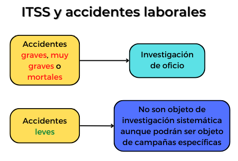

Aunque la respuesta a esta cuestión está muy condicionada al tipo y estructura de la empresa y por consiguiente no cabe una consideración general ni aplicable a todas las empresas, se pueden proponer dos modelos:
Investigación de línea.
Investigación especializada.
Copilot. Elaboración propia. Trabajadora herida tras un accidente
Investigación de línea
La persona clave en la ejecución de una investigación de línea, que debiera realizarse en todos los accidentes e incidentes acaecidos, es el mando directo del sector o área en que se produce el suceso. Ello es así por siguientes motivos, entre los que conviene destacar:
Conoce perfectamente el trabajo y su ejecución.
Conoce estrechamente a los trabajadores por su contacto continuo.
Presumiblemente será el que aplicará las medidas preventivas.
El mando directo debería iniciar en todo caso la investigación y recabar el asesoramiento y cooperación de especialistas en casos en que surjan dificultades en la identificación de las causas o en el diseño de las medidas a implantar.
Investigación especializada
La realiza el técnico de prevención, asesorado en su caso por especialistas técnicos de las diversas áreas y acompañado por el mando directo y otro personal de la línea relacionado con el caso.
Esta investigación se debe realizar en casos especiales o complejos entendiendo por tales, entre otros, algunos de los supuestos siguientes:
Accidentes graves o mortales.
Incidentes o accidentes leves de los que se deduzca una mayor potencialidad lesiva.
Todos aquellos casos en que lo solicite la línea.
En los casos dudosos del informe de la línea.
En supuestos repetitivos.
Presencia de los delegados de prevención
En caso de accidente de trabajo, el delegado de prevención debe ser informado por el empresario sobre los daños producidos a la salud de los trabajadores. Además tiene atribuida la competencia de visita del lugar en el que se ha producido el accidente de trabajo para conocer las circunstancias del mismo, pudiendo participar en la investigación del accidente de trabajo aportando las valoraciones que considere oportunas.
Presencia de la Inspección de Trabajo
De conformidad con lo dispuesto en el art. 9.1 d) LPRL, es competencia de la Inspección de Trabajo y Seguridad Social (ITSS), informar a la autoridad laboral sobre los accidentes de trabajo mortales, muy graves o graves, y sobre aquellos otros en que, por sus características o por los sujetos afectados, se considere necesario dicho informe, así como sobre las enfermedades profesionales en las que concurran dichas calificaciones y, en general, en los supuestos en que aquélla lo solicite respecto del cumplimiento de la normativa legal en materia de prevención de riesgos laborales.

Elaboración propia. ITSS y accidentes laborales